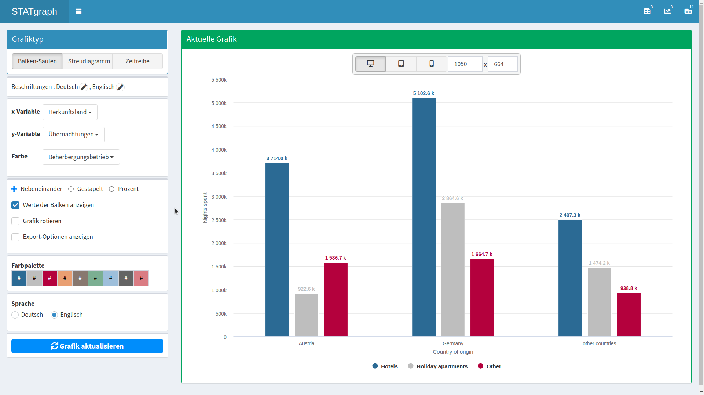

Behind the Scenes of Interactive Charts
Automating the Production of Engaging Web Components
Introduction
At Statistics Austria, we are currently working towards the release of a new website which will launch in June 2022.
The new website will make a stronger use of interactive charts and interactive tables (C&Ts). This presentation will outline the "making of" for these web components.
With C&Ts, I am referring to web graphics or web tables, which prodive interactions like tooltips, searching, zooming, etc.
We already made our feet wet
Statistics Austria already uses C&Ts in some statistical products- The STATatlas provides interactive maps on various topics
- The economic trend monitor includes interactive time series which are updated weekly
- Publications like the age pyramid and the material flows 2019 contain tailor-made statistical charts
The STATatlas provides maps (right) and time series charts (left) which are both interactive
Hovering over the timeseries on the left gives a tooltip with values for a specific year
Clicking on a region (right) will update the timeseries (left). The other two lines are parent regions of the selected region
It is also possible to switch the shown values. For example: show information about migration instead of age
the Economic Trend Monitor includes interactive time series which are updated weekly
Hovering over the chart will show a tooltip with values for the coressponding time
The handle at the bottom of the chart can be used to zoom out and show a larger timespan of values
The table can be sorted by clicking on one of the header cells. Example: Sort descending with respect to revenue
This Material Flows 2019 include a tailor-made sankey diagram
When the mouse is pointed to a node, it shows a tooltip with details
Clicking on a node shows a modal with a definition
So what's new?
Going forward, Statistics Austria will include C&Ts in website articles. This was not possible on our old website becuase of technical constraints
Whenever interactive C&T were used, they were hosted on a seperate page and linked from the articles
For comparison: An article of the current webpage
The landing page for the new webpage
An article with an embedded STATatlas map

An article with an embedded interactive table

Creating interactive components
Being able to embed C&Ts is great, but the question remains how they can be produced on a large scale
We decided to develop a C&T builder web application, which allows article authors to generate C&Ts via a graphical user interface
All generated C&Ts follow our corporate design and produce accessible, responsive and interactive web components
The C&T builder provides a chart preview on the right and a GUI to customize the chart on the left
The preview on the right supports interactions like tooltips which are also available on the website
On the left, article authors can customize their charts. For example: change the variable on the y-Axis
On the left, article authors can customize their charts. For example: change the variable on the y-Axis
It is also possible to switch to another chart type. Currently, bar charts, time sereies and scatterplots are supported
Interactive tables can be created in a similar fashion
The table shows 5 entries per page
Search strings can be used to filter the data
Tables can be sorted by clicking on a table header
How it works
 The tables are generated with the javascript package datatables, which supports searchable and sortable tables
The tables are generated with the javascript package datatables, which supports searchable and sortable tables
 The C&T builder app was written with shiny, which is a web application framework for the R language
The C&T builder app was written with shiny, which is a web application framework for the R language
Data Import
There are two options for importing data in the C&T builder app- STATcube data can be imported via a REST API
- Data from the open.data portal is parsed from csv files
Combining Charts and Text
Other Contributors
 The stylings were coordinated with the front end developers of our new website
The stylings were coordinated with the front end developers of our new website
Summary
- The new webiste will launch in June 2022
- Website articles will contain interactive charts and tables
- A C&T builder app was developed so article authors can create C&Ts easily, quickliy and consistently
- Stay tuned to see all this in action in a few weeks